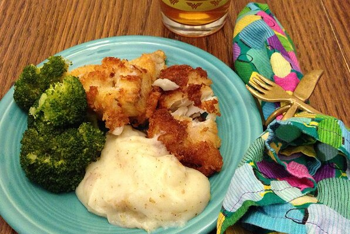

Fish and Chips

Description
Here in New Zealand we catch red snapper all the time, and believe me, this is the best way of eating it! Serve with lemon wedges, tarter sauce and hot chips (French fries) on the side.
Ingredients
- 1 quart vegetable oil for frying
- 1 pound red snapper fillets
- 1 egg, beaten
- ½ cup dry bread crumbs
Steps
- In a large heavy skillet, heat oil to 375 degrees F (190 degrees C).
- Dip fillets into beaten egg and dredge in bread crumbs.
- Gently slide fish into hot oil and fry until golden brown. Drain briefly on paper towels. Serve hot.